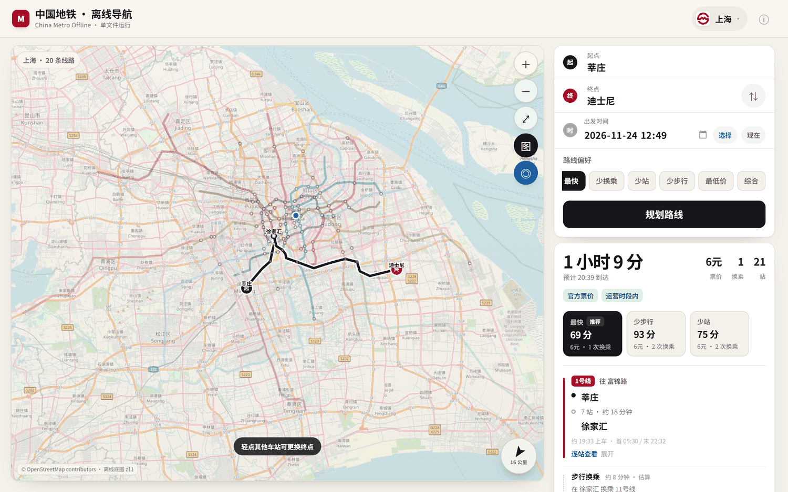

37 个城市/地区、339 条线路、6464 个车站。路线规划、官方 OD 票价、首末班与末班车校验，以及 OSM z10 离线底图，全部内置在一个 HTML 文件里。

都是单文件离线页面，不需要安装，也不需要登录。
打开就能查路线、票价和末班车；所有数据在文件内，不请求服务器。
最快、少换乘、少站、少步行、最低票价等偏好；按实际线路图与时刻计算，支线会识别同站换向。
读取各城市官方起终点票价矩阵；缺失的 OD 对明确显示“暂无票价”，不用估算值冒充官方。
逐段检查换乘是否赶得上末班，区分“运营时段内 / 首班前 / 末班已过”，并给出最晚出发时间。
771 张 OSM z10 瓦片按城市拼成单张底图，保留 OSM 署名；不请求在线瓦片，放大后为低分辨率。
保留原生日期时间输入，另提供“选择”按钮：24 小时 + 5 分钟面板，鼠标和触屏都方便。
无 CDN、无外部 JSON、无字体/图片请求；用浏览器直接打开 file:// 也能运行。
只收录可核实的城市数据；未收录城市不会用占位线路或伪造站点填充。
未收录：常州、东莞、佛山、绍兴、嘉兴、金华、洛阳、南通、芜湖、台州、泉州、三亚、温州等；数据补齐前不做占位。
城市拓扑、票价、首末班来自 Open Metro 整理的中国城市地铁数据，来源为各城市运营方/官方路径规划器/开放数据。OSM 底图 © OpenStreetMap contributors，ODbL 1.0。
首末班为“车站 + 方向 + 终点”粒度，不是逐班时刻表；候车按 3 分钟估算。实际以车站公告为准。
官方 OD 矩阵的抓取时点值，不含未来调价、儿童票、月度累计优惠等。